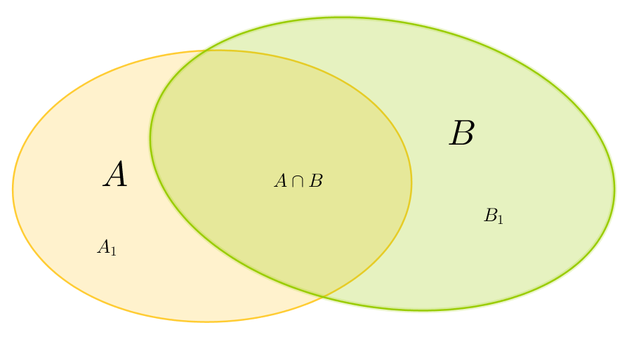

$\Omega$ désigne un univers et $P$ est une probabilité sur $\Omega$.
Formule de Poincaré
Soit $A,B$ deux événements de $\Omega$. Alors
$$P(A\cup B)=P(A)+P(B)-P(A\cap B).$$

Posons $A_1=A\backslash B$, $B_1=B\backslash A$. Alors $(A_1,B_1,A\cap B)$ forme une partition de $A\cup B$. On a donc
$$P(A\cup B)=P(A_1)+P(B_1)+P(A\cap B).$$
Mais, $(A_1,A\cap B)$ est une partition de $A$ et donc
$$P(A)=P(A_1)+P(A\cap B).$$
De même, $(B_1,A\cap B)$ est une partition de $B$ et donc
$$P(B)=P(B_1)+P(A\cap B).$$
On en déduit que
\begin{eqnarray*}
P(A\cup B)&=&P(A)-P(A\cap B)+P(B)-P(A\cap B)+P(A\cap B)\\
&=&P(A)+P(B)-P(A\cap B).
\end{eqnarray*}
Probabilité de la réunion d'événements incompatibles
Soit $A_1,\dots,A_n$ des événements deux à deux incompatibles. Alors $P(A_1\cup\dots\cup A_n)=P(A_1)+\dots+P(A_n).$
Notons, pour $n\geq 2$, $\mathcal P(n)$ la propriété suivante : ``pour toute famille $A_1,\dots,A_n$ d'événements deux à deux incompatibles, on a $P(A_1\cup\dots\cup A_n)=P(A_1)+\dots+P(A_n)$''. On va prouver par récurrence sur $n\geq 2$ que $\mathcal P(n)$ est vraie. On observe d'abord que $\mathcal P(2)$ est vraie (par définition d'une probabilité). Soit $n\geq 2$ tel que $\mathcal P(n)$ est vraie, et prouvons $\mathcal P(n+1)$. Soit $A_1,\dots,A_{n+1}$ une famille de $n+1$ événements deux à deux incompatibles et posons $B=A_1\cup\dots\cup A_n$. Alors $B$ et $A_{n+1}$ sont incompatibles, et puisque $\mathcal P(2)$ est vraie, on a
$$P(A_1\cup\dots \cup A_{n+1})=P(B\cup A_{n+1})=P(B)+P(A_{n+1}).$$
Maintenant, on peut appliquer $\mathcal P(n)$ pour calculer $P(B)$:
$$P(B)=P(A_1\cup\dots\cup A_n)=P(A_1)+\dots+P(A_n).$$
On en déduit que $\mathcal P(n+1)$ est vraie. Donc, par le principe de récurrence, $\mathcal P(n)$ est vraie pour tout $n\geq 2$.
Formule des probabilités composées
Formule des probabilités composées : Soit $A_1,\dots,A_m$ des événements tels que
$P(A_1\cap\dots\cap A_{m-1})\neq 0$. Alors :
$$P(A_1\cap\dots\cap A_m)=P(A_1)P(A_2|A_1)P(A_3|A_1\cap A_2)\cdots P(A_m|A_1\cap \dots\cap A_{m-1}).$$
Pour $m\geq 1$, on note $\mathcal P_m$ la propriété : pour tous événements $A_1,\dots,A_m$ avec $P(A_1\cap\dots\cap A_{m-1})> 0$, on a
$$P(A_1\cap\dots\cap A_m)=P(A_1)P(A_2|A_1)P(A_3|A_1\cap A_2)\cdots P(A_m|A_1\cap \dots\cap A_{m-1}).$$
Initialisation : Pour $m=1$, $P(A_1)=P(A_1)$.
Hérédité : Soit $m\geq 1$ tel que $\mathcal P_m$ est vraie et prouvons $\mathcal P_{m+1}$. Considérons $A_1,\dots,A_{m+1}$ des événements tels que
$P(A_1\cap\dots\cap A_{m})> 0$. Posons $B=A_1\cap \cdots\cap A_m$. Alors, puisque $P(B)>0$, on a
\begin{eqnarray*}
P(B\cap A_{m+1})&=&P(B)P(A_{m+1}|B) \\
P(A_1\cap\dots\cap A_{m+1})&=& \color{red}{P(A_1\cap \cdots \cap A_m)} P(A_{m+1}|A_1\cap\cdots\cap A_m).
\end{eqnarray*}
On applique l'hyptohèse de récurrence (c'est légitime car $P(A_1\cap\cdots\cap A_{m-1})>0$)
et donc
\begin{align*}
P(A_1\cap\dots\cap A_{m+1})&=\color{red}{P(A_1)P(A_2|A_1)P(A_3|A_1\cap A_2)\cdots P(A_m|A_1\cap \dots\cap A_{m-1})} \\
&\quad\quad \times P(A_{m+1}|A_1\cap\cdots\cap A_m).
\end{align*}
$\mathcal P_{m+1}$ est vraie.
Conclusion : $\mathcal P(m)$ est vraie pour tout entier $m\geq 1$.
Formule des probabilités totales
Soit $(E_1,\dots,E_n)$ une partition de $\Omega$ en des événements dont aucun n'est de probabilité nulle. Alors, pour tout événement $A$,
$$P(A)=\sum_{i=1}^n P_{E_i}(A)P(E_i).$$
Les événements $(A\cap E_1,\dots,A\cap E_n)$ forment une partition de $A$. Donc on a
$$P(A)=\sum_{i=1}^n P(A\cap E_i).$$
Mais, par la définition des probabilités conditionnelles,
$$P_{E_i}(A)=\frac{P(A\cap E_i)}{P(E_i)},$$
et donc
$$P(A)=\sum_{i=1}^n P_{E_I}(A)P(E_i).$$
Formule de Bayes
Soit $(E_1,\dots,E_n)$ une partition de $\Omega$ en des événements dont aucun n'est de probabilité nulle. Alors, pour tout événement $A$ de probabilité non-nulle et tout $k=1,\dots,n$,
$$P_A(E_k)=\frac{P_{E_k}(A)\times P(E_k)}{\sum_{i=1}^n P_{E_i}(A)\times P(E_i)}.$$
Par définition,
$$P_A(E_k)=\frac{P(A\cap E_k)}{P(A)}.$$
On calcule $P(A)$ par la formule des probabilités totales :
$$P(A)=\sum_{i=1}^n P_{E_i}(A)P(E_i).$$
De plus, on a
$$P_{E_k}(A)=\frac{P(A\cap E_k)}{P(E_k)}\implies P(A\cap E_k)=P_{E_k}(A)\times P(E_k).$$
Indépendance et passage au complémentaire
Si $A$ et $B$ sont deux événements indépendants, alors $A$ et $\bar B$ sont indépendants.
$A\cap B$ et $A\cap \bar B$ forment une partition de $A$ et on a donc
$$P(A\cap B)+P(A\cap\bar B)=P(A).$$
Puisque $A$ et $B$ sont indépendants, on en déduit que
$$P(A)P(B)+P(A\cap\bar B)=P(A)\iff P(A\cap \bar B)=P(A)-P(A)P(B)=P(A)\big(1-P(B)\big).$$
On conclut car $P(\bar B)=1-P(B)$.
Linéarité de l'espérance
Si $X$ et $Y$ sont deux variables aléatoires définies sur $\Omega$, alors $E(X+Y)=E(X)+E(Y)$.
C'est une formule difficile à démontrer en toute généralité (parle-t-on de variables aléatoires discrètes, continues,...?). Nous la démontrons dans le cas où l'univers $\Omega$ est fini!
Notons $\Omega=\{\omega_1,\dots,\omega_n\}$. Le point-clé est de partir de la bonne formule de l'espérance. Si on part de la formule utilisant les valeurs de l'espace d'arrivée, $X(\Omega)=\{x_1,\dots,x_p\}$,
$$E(X)=\sum_{k=1}^p x_k P(X=x_k)$$
alors c'est difficile de démontrer cette formule car $X$ et $Y$ ne prennent pas forcément des valeurs identiques.
Il vaut mieux partir de la formule utilisant l'espace de départ $\Omega$ qui est
$$E(X)=\sum_{k=1}^n X(\{\omega_k\})P(\{\omega_k\}).$$
On a alors
\begin{eqnarray*}
E(X+Y)&=&\sum_{k=1}^{n}\big(X(\{\omega_k\})+Y(\{\omega_k\})\big)P(\{\omega_k\})\\
&=&\sum_{k=1}^n X(\{\omega_k\})P(\{\omega_k\})+\sum_{k=1}^n Y(\{\omega_k\})P(\{\omega_k\})\\
&=&E(X)+E(Y).
\end{eqnarray*}
Espérance du produit de deux variables aléatoires indépendantes
Si $X$ et $Y$ sont deux variables aléatoires indépendantes, alors $E(XY)=E(X)E(Y)$.
On effectue la preuve lorsque $X$ et $Y$ sont deux variables aléatoires discrètes, $X(\Omega)=\{x_1,\dots,x_n\}$ et $Y(\Omega)=\{y_1,\dots,y_p\}.$ Alors, d'après la formule de transfert pour les couples de variables aléatoires,
\begin{eqnarray*}
E(XY)&=&\sum_{i=1}^n \sum_{j=1}^p x_i\cdot y_jP\big(X=x_i\textrm{ et }Y=y_j\big).
\end{eqnarray*}
Puisque les variables sont indépendantes,
\begin{eqnarray*}
E(XY)&=&\sum_{i=1}^n \sum_{j=1}^p x_i\cdot y_jP(X=x_i)\cdot P(Y=y_j)\\
&=&\left(\sum_{i=1}^n x_i P(X=x_i)\right)\cdot \left(\sum_{j=1}^p y_j P(Y=y_j)\right)\\
&=&E(X)\cdot E(Y).
\end{eqnarray*}
Rappelons que la réciproque de cette propriété est fausse.
Formule de König
Soit $X$ une variable aléatoire. Alors
$V(X)=E(X^2)-\big(E(X)\big)^2.$
Par définition, on a
$$V(X)=E\big((X-E(X))^2\big).$$
On développe le carré, puis on utilise la linéarité de l'espérance :
\begin{eqnarray*}
V(X)&=&E\big(X^2-2XE(X)+E(X)^2\big)\\
&=&E(X^2)-2E(X)\cdot E(X)+\big(E(X)\big)^2\\
&=&E(X^2)-\big(E(X)\big)^2.
\end{eqnarray*}
Variance de la somme de deux variables aléatoires indépendantes
Soit $X$ et $Y$ deux variables aléatoires indépendantes. Alors $V(X+Y)=V(X)+V(Y)$.
On utilise la formule de König, puis la linéarité de l'espérance :
\begin{eqnarray*}
V(X+Y)&=&E\big( (X+Y)^2\big)- \big(E(X+Y)\big)^2\\
&=&E\big(X^2+2XY+Y^2\big)-\big(E(X)+E(Y)\big)^2\\
&=&E(X^2)+2E(XY)+E(Y^2)-\big(E(X)\big)^2-2E(X)\cdot E(Y)-\big(E(Y)\big)^2.
\end{eqnarray*}
Puisque les variables aléatoires $X$ et $Y$ sont indépendantes, on a $E(XY)=E(X)\cdot E(Y)$ et donc
$$V(X+Y)=E(X^2)-\big(E(X)\big)^2+E(Y^2)-\big(E(Y)\big)^2=V(X)+V(Y).$$
Espérance et variance d'une loi binomiale
Si $X$ est une variable aléatoire suivant une loi binomiale $\mathcal B(n,p)$, alors
$$E(X)=np\text{ et }V(X)=np(1-p).$$
Il ne faut surtout pas démontrer ces formules en utilisant la définition de l'espérance et de la variance, mais plutôt en se souvenant que $X$ s'écrit $X=X_1+\dots+X_n$, où les $X_i$ sont des variables aléatoires indépendantes de Bernoulli de paramètre $p$. En particulier, $E(X_i)=p$ et $V(X_i)=p(1-p)$. Par linéarité de l'espérance,
$$E(X)=E(X_1+\dots+X_n)=\sum_{i=1}^n E(X_i)=np$$
(remarquons que ceci n'utilise pas l'indépendance des $X_i$). D'autre part, puisque les variables aléatoires sont indépendantes, on a
$$V(X)=V(X_1+\dots+X_n)=\sum_{i=1}^n V(X_i)=np(1-p)$$
(ceci nécessite l'indépendance des $X_i$ pour pouvoir ajouter les variances).
Relation de Pascal sur les coefficients binomiaux
Pour $n\geq 1$ et $0\leq k\leq n$, on a
$$\binom{n+1}{k+1}=\binom{n}k+\binom{n}{k+1}.$$
$\binom{n+1}{k+1}$ représente le nombre de chemins réalisant $k+1$ succès dans l'arbre d'un schéma de Bernoulli à $n+1$ répétitions. On réalise une partition de l'ensemble de ces chemins en
les chemins qui commencent par un succès. Le reste du chemin consiste alors en $k$ succès pour $n$ répétitions : il y a donc $\binom{n}k$ tels chemins.
les chemins qui commencent par un échec. Le reste du chemin consiste alors en $k+1$ succès pour $n$ répétitions : il y a donc $\binom{n}{k+1}$ tels chemins.
Symétrie des coefficients binomiaux
Pour $n\geq 1$ et $0\leq k\leq n$, on a
$$\binom nk=\binom n{n-k}.$$
$\binom nk$ représente le nombre de chemins réalisant $k$ succès dans l'arbre d'un schéma de Bernoulli à $n$ répétitions. C'est aussi le nombre de chemins réalisant $k$ échecs (par symétrie des succès et échecs dans l'arbre). Maintenant, les chemins qui réalisent $k$ échecs sont exactement ceux qui réalisent $n-k$ succès.
On a donc démontré que $\binom nk$ est le nombre de chemins réalisant $n-k$ succès dans l'arbre d'un schéma de Bernoulli à $n$ répétitions. Mais par définition des coefficients binomiaux, ce nombre vaut aussi $\binom n{n-k}$. On a bien démontré l'égalité voulue.
Loi d'une variable aléatoire suivant une loi binomiale
Si $X$ est une variable aléatoire suivant une loi binomiale $\mathcal B(n,k)$, alors
$P(X=k)=\binom nk p^k (1-p)^{n-k}$.
On cherche la probabilité que, dans la répétition indépendante de $n$ épreuves aléatoires de Bernoulli avec probabilité de succès $p$, on rencontre $k$ succès. Il y a, par définition des coefficients binomiaux, $\binom nk$ événements élémentaires constituant cet événement. Fixons un de ces événements élémentaires. Chacun des succès de cet événement élémentaire a une probabilité $p$ de se produire. Chacun des échecs a une probabilité $1-p$ de ce produire. Puisqu'il y a $k$ succès et $n-k$ échecs, par indépendance des expériences de Bernoulli, la probabilité de chaque événement élémentaire est $p^k (1-p)^{n-k}$. Puisqu'il y a $\binom nk$ tels événements élémentaires, on en déduit le résultat voulu.
Espérance et variance d'une variable aléatoire suivant une loi de Poisson
Si $X$ suit une loi de Poisson de paramètre $\lambda$, alors $E(X)=V(X)=\lambda.$
Si $X$ suit une loi de Poisson de paramètre $\lambda$, alors
$$E(X)=\sum_{k=0}^{+\infty}ke^{-\lambda}\frac{\lambda^k}{k!}=\lambda e^{-\lambda}\sum_{k=1}^{+\infty}\frac{\lambda^{k-1}}{(k-1)!}=
\lambda e^{-\lambda}e^{\lambda}=\lambda.$$
Pour la variance, on a
$$E(X^2)=\sum_{k=0}^{+\infty}k^2e^{-\lambda}\frac{\lambda^k}{k!}.$$
On écrit que $k^2=k(k-1)+k$ et donc
$$E(X^2)=\lambda^2 e^{-\lambda}\sum_{k=2}^{+\infty}\frac{\lambda^{k-2}}{(k-2)!}+\lambda e^{-\lambda}\sum_{k=1}^{+\infty}\frac{\lambda^{k-1}}{(k-1)!}=\lambda^2+\lambda.$$
On en déduit que
$$V(X)=E(X^2)-\big(E(X)\big)^2=\lambda.$$
Espérance d'une variable aléatoire suivant une loi exponentielle
Si $X$ suit une loi exponentielle de paramètre $\lambda>0$, alors $E(X)=\frac 1{\lambda}.$
Par définition,
$$E(X)=\lim_{X\to+\infty}\int_0^X \lambda te^{-\lambda t}dt.$$
Cette intégrale se calcule aisément par une intégration par parties. Si on veut réaliser une preuve accessible en terminale, on cherche une primitive à $t\mapsto \lambda te^{-\lambda t}$ sous la forme $f:t\mapsto (at+b)e^{-\lambda t}$.
Mais,
$$f'(t)=ae^{-\lambda t}-\lambda(at+b)e^{-\lambda t}=\big(-\lambda at+(a-\lambda b)\big)e^{-\lambda t}.$$
Le choix de $a=-1$ et $b=-\frac 1\lambda$ convient. On en déduit que
\begin{eqnarray*}
\int_0^X \lambda te^{-\lambda t}dt&=&\left[\left(-t-\frac 1{\lambda}\right)e^{-\lambda t}\right]_0^X\\
&=&\left(-X-\frac 1{\lambda}\right)e^{-\lambda X}+\frac1\lambda.
\end{eqnarray*}
Faisant tendre $X$ vers $+\infty$ et utilisant la croissance comparée de l'exponentielle et des polynômes, on en déduit que
$$E(X)=\frac 1{\lambda}.$$
Loi exponentielle et durée de vie sans vieillissement
Soit $X$ une variable aléatoire suivant une loi exponentielle de paramètre $\lambda>0$. Alors $X$ vérifie la propriété de "durée de vie sans vieillissement" : pour tous $s,t>0$, on a
$$P_{(X>s)}(X>s+t)=P(X>t).$$
Remarquons d'abord que, pour tout $h>0$, on a
$$P(X>h)=e^{-\lambda h}.$$
En effet,
$$P(X>h)=1-P(X\leq h)=1-\int_0^h \lambda e^{-\lambda t}dt=e^{-\lambda h}.$$
Par définition de la probabilité conditionnelle, on a
$$P_{(X>s)}(X>s+t)=\frac{P\big( (X>s)\cap (X>s+T)\big)}{P(X>s)}.$$
Mais l'événement $X>s+t$ est contenu dans l'événement $X>s$, et donc
$$P_{(X>s)}(X>s+t)=\frac{P(X>s+T)}{P(X>s)}.$$
On sait calculer ces probabilités :
$$P_{(X>s)}(X>s+t)=\frac{e^{-\lambda(s+t)}}{e^{-\lambda s}}=e^{-\lambda t}=P(X>t).$$
Remarquons que la réciproque est également vérifiée, mais c'est plus difficile à démontrer!
Intervalle des valeurs prises par une loi normale
Si $X$ suit une loi normale centrée réduite $\mathcal N(0,1)$, alors pour tout $\alpha\in ]0,1[$, il existe un unique
$u_{\alpha}>0$ tel que $P(-u_\alpha<X<u_\alpha)=1-\alpha$.
Posons, pour $x\geq 0$,
$$F(x)=P(-x< X< x)=\int_{-x}^x \frac{e^{-t^2/2}}{\sqrt{2\pi}}dt=2\int_0^x \frac{e^{-t^2/2}}{\sqrt{2\pi}}dt.$$
Alors $F$ est une fonction continue sur $[0,+\infty[$. Elle vérifie $F(0)=0$ et $\lim_{x\to+\infty}F(x)=1$.
De plus, $F$ est dérivable et pour tout $x\in\mathbb R$,
$$F'(x)=2e^{-x^2/2}/\sqrt{2\pi}>0.$$
Ainsi, $F$ est strictement croissante.
$F$ réalise donc une bijection de $[0,+\infty[$ sur $[0,1[$.
On en déduit qu'il existe un unique $u_\alpha>0$ tel que $F(u_\alpha)=1-\alpha$.
Densité d'une variable aléatoire suivant une loi normale $\mathcal N(m,\sigma^2)$
Si $X$ suit une loi normale $\mathcal N(\mu,\sigma^2)$, alors $X$ admet une densité donnée par
$$f(x)=\frac{1}{\sqrt{2\pi}\sigma}\exp\left(-\frac 12\left(\frac{x-m}\sigma\right)^2\right).$$
Dans le cours de Terminale S, on dit que $X$ suit une loi normale $\mathcal N(m,\sigma^2)$ lorsque
$\frac{X-m}{\sigma}$ suit une loi normale centrée réduite $\mathcal N(0,1)$. Soit $a<b$ deux réels. On a
\begin{eqnarray*}
P(a\leq X\leq b)&=&P(a-m\leq X-m\leq b-m)\\
&=&P\left(\frac{a-m}{\sigma}\leq \frac{X-m}\sigma \leq \frac{b-m}\sigma\right)\\
&=&\int_{\frac{a-m}\sigma}^{\frac{b-m}\sigma}\frac{1}{\sqrt{2\pi}}\exp\left(-\frac{u^2}2\right)du,
\end{eqnarray*}
où on a utilisé la densité d'une variable aléatoire suivant une loi $\mathcal N(0,1)$. On réalise alors le changement de variables $u=\frac{x-m}\sigma$, de sorte que $\sigma du=dx$. On a alors
$$P(a\leq X\leq b)=\int_a^b \frac{1}{\sigma\sqrt{2\pi}}\exp\left(-\frac 12\left(\frac{x-m}\sigma\right)^2\right)dx.$$
Ceci signifie exactement que $f$ définie sur $\mathbb R$ par $f(x)=\frac{1}{\sqrt{2\pi}\sigma}\exp\left(-\frac 12\left(\frac{x-m}\sigma\right)^2\right)$ est la densité de probabilité de $X$.
Espérance et variance des lois normales
Si $X$ suit une loi normale $\mathcal N(m,\sigma^2)$, alors $E(X)=m$ et $V(X)=\sigma^2$.
En Terminale S, on définit l'espérance de $X$ suivant une loi normale $\mathcal N(0,1)$ par
$$E(X)=\lim_{x\to+\infty}\int_0^x tf(t)dt+\lim_{y\to-\infty}\int_y^0 tf(t)$$
où $f$ est la densité de $X$. Calculons donc, pour tous $a,b\in\mathbb R$,
\begin{eqnarray*}
\int_a^b tf(t)&=&\frac{1}{\sqrt 2\pi}\int_a^b te^{-t^2/2}dt\\
&=&\frac{-1}{\sqrt 2\pi} \int_a^b u'(t)\exp(u(t))dt
\end{eqnarray*}
où $u(t)=t^2/2$. On a donc
\begin{eqnarray*}
\int_a^b tf(t)&=&\frac{-1}{\sqrt 2\pi}\left[\exp(-t^2/2)\right]_a^b\\
&=&\frac{-1}{\sqrt 2\pi}\left(\exp(-b^2/2)-\exp(-a^2/2)\right).
\end{eqnarray*}
On en déduit que
$$\lim_{x\to+\infty}\int_0^x tf(t)dt=\lim_{x\to+\infty}\frac{-1}{\sqrt 2\pi}\left(\exp(-x^2/2)-1\right)=\frac{1}{\sqrt{2\pi}}$$
et que
$$\lim_{y\to-\infty}\int_y^0 tf(t)dt=\lim_{y\to-\infty}\frac{-1}{\sqrt 2\pi}\left(1-\exp(-y^2/2)\right)=\frac{-1}{\sqrt{2\pi}}.$$
Finalement, on en déduit que l'espérance de $X$ est nulle.
Pour la variance de $X$, c'est plus difficile. D'une part, la définition n'est pas très claire. D'autre part, le calcul est plus difficile et est admis. Il faut retenir que la variance d'une variable aléatoire $X$ suivant une densité $f$ et ayant une espérance $E(X)$ est définie par
$$V(X)=\lim_{x\to+\infty}\int_0^x (t-E(X))^2f(t)dt+\lim_{y\to-\infty}\int_y^0 (t-E(X))^2f(t)$$
lorsque ces deux limites existent.
Lorsque $X$ suit une loi normale $\mathcal N(m,\sigma^2)$, on peut retrouver la variance ou l'espérance de plusieurs façons, par exemple :
en écrivant que $Y=\frac{X-m}{\sigma}$ admet une espérance nulle et une variance égale à $1$, en retournant à $X=m+\sigma Y$ et en utilisant que $E(m+\sigma Y)=m+E(Y)$ et $V(m+\sigma Y)=\sigma^2 V(Y)$, même si ces deux formules ne sont pas si faciles à justifier dans le cadre des variables aléatoires à densité, et sont d'ailleurs admises par les programmes.
en repartant de la densité de $X$, en utilisant les formules précédentes définissant $E(X)$ et $V(X)$ et en effectuant un calcul tout à fait similaire à ceux effectués pour la loi normale centrée réduite, ou encore un changement de variables pour s'y ramener...